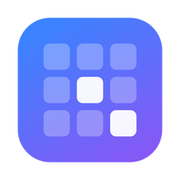

Soundpad for macOS
A free soundboard for Mac. Play sounds into Discord, Zoom, Teams and games, and hear them yourself, with one key press.
Download for MacFeatures
Global hotkeys
Give every sound a shortcut. Works in the background, even mid-game.
Built-in virtual mic
Other apps hear Soundpad directly. No extra software to install.
Your voice, too
Your real microphone is mixed in with the sounds.
Two volumes
Set separately how loud it is for you and for everyone else.
Playlists
Drag and drop files to organize sounds into lists.
Icons or a list
Browse sounds as big album covers or a compact list, just like Finder.
Sort and filter
By name, length or date added. Find the right sound in a second.
Player controls
Pause, seek, skip ±10 s, repeat one sound or play a whole list.
Almost any format
MP3, WAV, FLAC, OGG, AAC/M4A, AIFF and CAF. Hour-long mixes stay light.
40 languages
Follows your Mac's language automatically. Updates itself.
Install
- Download and unzip
Get the latest Soundpad zip and drag Soundpad into Applications.
- Allow it once
On first launch macOS says “Soundpad” Not Opened. Click Done, then go to System Settings → Privacy & Security and click Open Anyway.
- Install the virtual mic
Click Install in the orange banner inside Soundpad. macOS asks for your password once.
- Pick it in your chat app
Choose Soundpad Virtual Mic as the microphone in Discord, Zoom, Teams or your game.
Questions
My friends don't hear the sounds.
Check that your chat app's microphone is set to Soundpad Virtual Mic, and that the 🎙 slider in Soundpad isn't at zero or muted.
They hear the sounds but not my voice.
In Settings, set Mix in my microphone to your real microphone, and allow microphone access in System Settings → Privacy & Security → Microphone.
I already use BlackHole or Loopback.
They work side by side. Soundpad never takes over BlackHole by itself. If you'd rather route into BlackHole, choose it in Settings → Virtual microphone.
Where does the cover art come from?
From the picture stored in the music file, or a cover.jpg or folder.jpg in the same folder. Sounds without one get a colored tile.
A hotkey doesn't work.
Another app might already use that combination. Pick a different one.
Does it collect any data?
No. No accounts, no ads, no analytics. It only goes online to check for updates, and you can turn that off.
How do I uninstall it?
Open Settings → Soundpad Virtual Mic → Manage → Uninstall, then drag Soundpad from Applications to the Trash.
Prefer Terminal for the first launch?
xattr -dr com.apple.quarantine /Applications/Soundpad.app